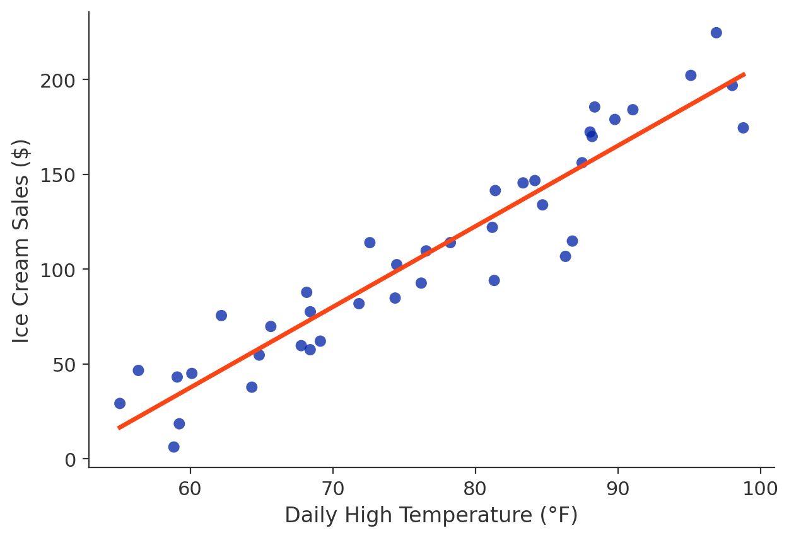
As temperature goes up, sales go up — and the line says by how much per degree.
Correlation tells you how strong the relationship is. Regression tells you how much Y changes when X moves.
We are no longer asking whether groups differ. We are asking how much Y changes when X changes.
The more variation you use, the more precisely you can estimate the relationship.
Many of you will use ECLS-K for your capstone — these are exactly the tools your final analysis needs.
scatter x1rscalk1 x12sesl
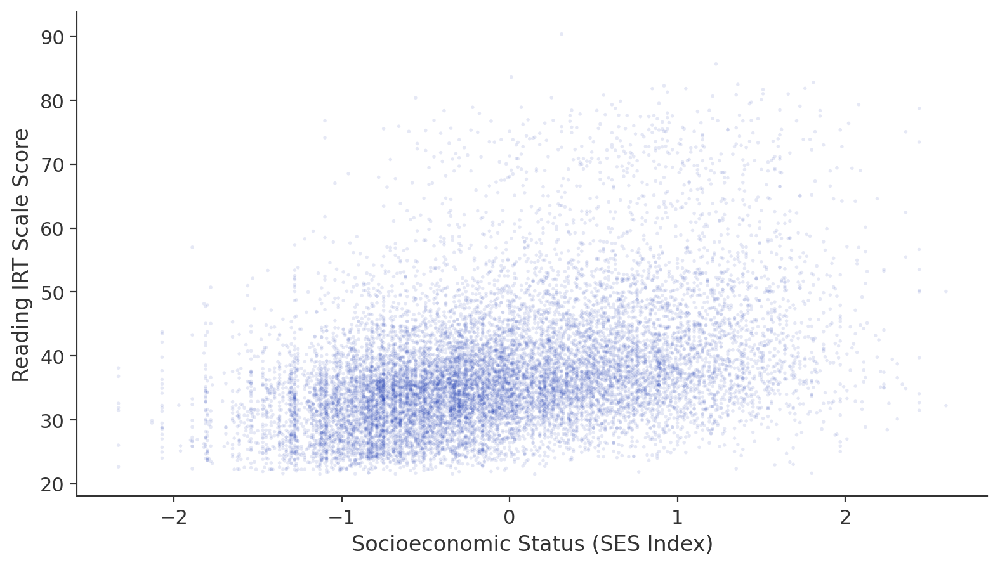
Every dot is one student. The cloud drifts upward — but with a lot of spread at every SES level.
How do we put a number on how strong this relationship is?
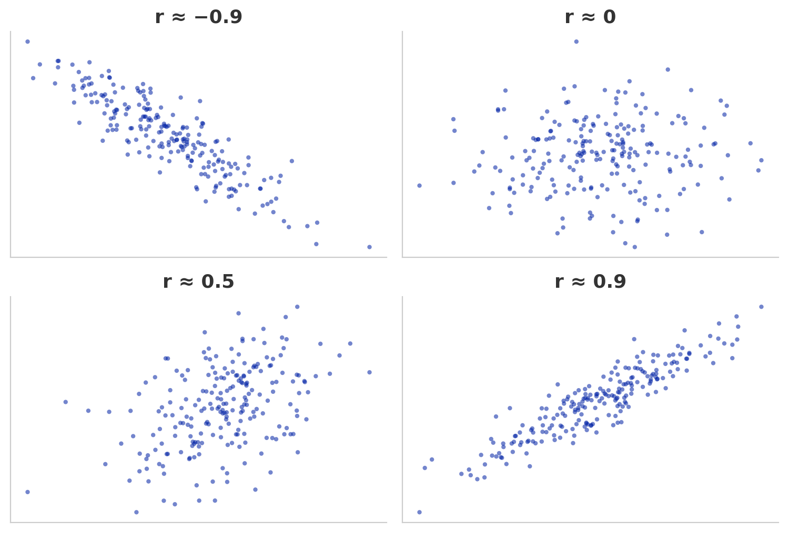
Caveat: r only captures linear relationships — a U-shape would give r ≈ 0 despite a real pattern.
pwcorr x1rscalk1 x12sesl, sig
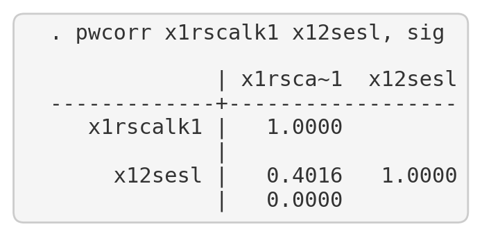
r = 0.40, p < 0.001 — a moderate positive correlation. Rule of thumb: below 0.3 weak, 0.3–0.7 moderate, above 0.7 strong.
We know the relationship exists. Can we describe it more precisely — with a line?
The answer is B — a moderate positive linear relationship. Correlation tells us direction and strength.
It does not tell us that one variable causes the other (A). And r is not the percentage of variation explained (C) — that’s R², which we’ll get to shortly. An r of 0.40 is conventionally moderate, not weak (D).
scatter x1rscalk1 x12sesl || lfit x1rscalk1 x12sesl
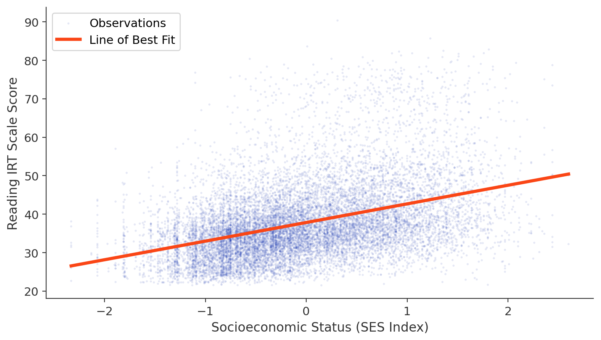
Correlation gave us how strong (r = 0.40). The line gives us how much: a formula for predicting scores.
Among all possible lines, this one does the best job summarizing the relationship.
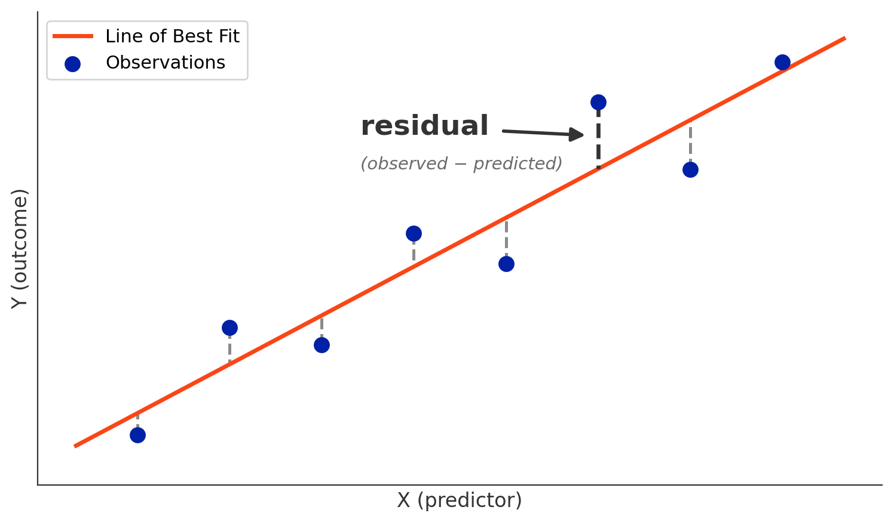
Each vertical segment is a residual: observed minus predicted. OLS (Ordinary Least Squares) finds the line that makes the squared residuals, added up, as small as possible.
The concept matters here, not the formula — minimize the overall prediction error.
regress x1rscalk1 x12sesl
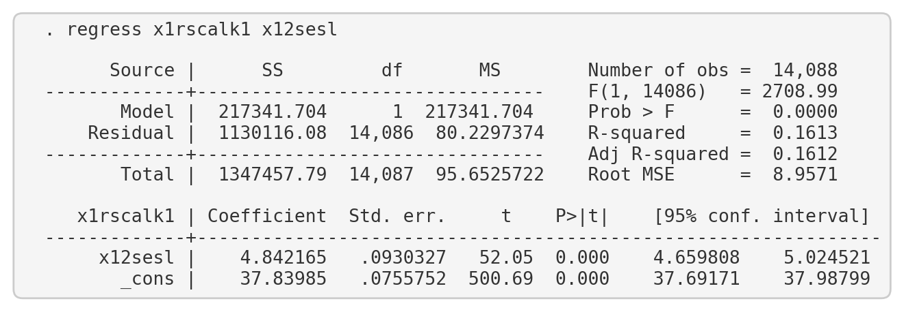
A lot of output — but only four numbers really matter. Let’s break them down.
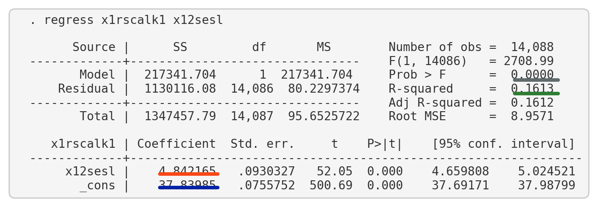
The answer is B — for each 1-unit increase in SES, reading scores increase by 4.84 points on average. That’s the core interpretation of a regression coefficient: it tells you the rate of change.
It’s not the sample mean (A), not R² (C), and not a two-group comparison (D) — that would be a t-test, and “high” vs. “low” isn’t defined here.
“Associated with” — not “causes.” We’ll come back to that.
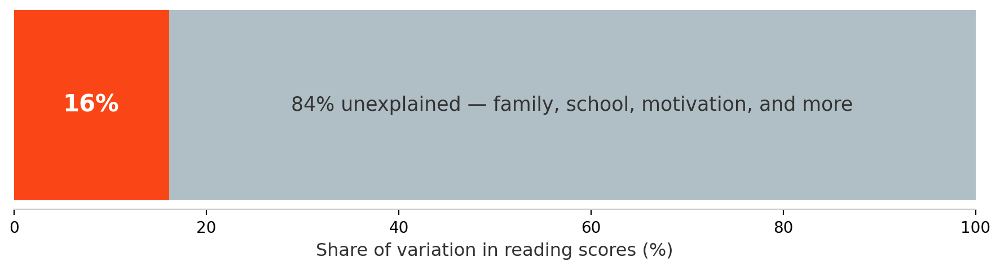
SES alone explains 16% of the variation — meaningful for a single predictor of a complex outcome.
The other 84%: school quality, family structure, motivation, prior learning, and more.
A low R² does not mean the relationship is unimportant. It means other factors also matter — which is almost always true in social science.
The coefficient is significantly different from zero: higher SES is associated with higher reading scores.
The answer is B. An R² of 0.16 means SES explains 16% of the variation — meaningful for a single predictor of a complex outcome.
There is no universal cutoff for “important” (A). Significance is assessed by the p-value, not R² (C). And R² stands on its own as a descriptive measure of explanatory power (D).
regress x1mscalk1 x12sesl
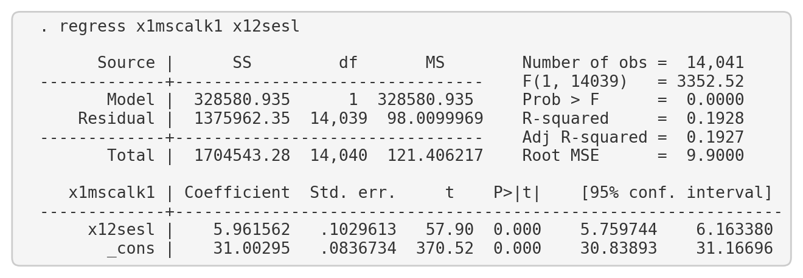
Slope = 5.96 (≈6 points per SES unit) | R² = 0.19 | p < 0.001.
Same analysis, different outcome — and a slightly stronger relationship.
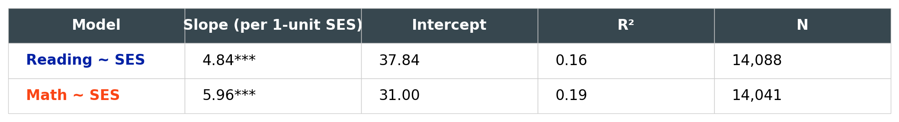
The answer is B — SES explains a slightly larger share of the variation in math scores (0.19) than in reading scores (0.16).
Both models are statistically significant, so A is wrong. Neither model has a high R², so “more accurate because closer to 1.0” overstates it (C). And B is the straightforward factual conclusion the numbers support (D).
Our regression shows an association. It does not prove that changing SES would change scores. Module 9 digs deeper into why.
The regression shows a correlation between spending and scores — it doesn’t prove that spending causes higher scores. Wealthier districts may spend more and have students with other advantages: higher family income, more educated parents, better facilities.
Without controlling for those factors, we can’t conclude that increasing spending alone would raise scores. A strong answer names at least one confounding factor and recognizes that a bivariate regression controls for nothing else.
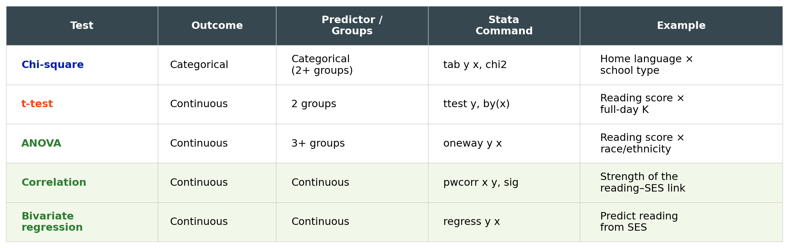